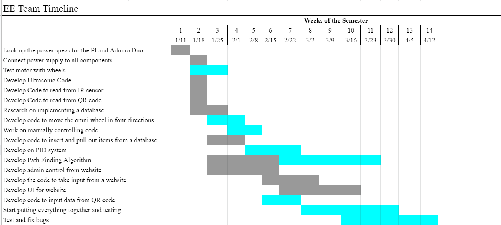

Current and Future Work


The necessary requirements to start the NodeJS server are inside the GitHub under UserInput. The readme has all the requirements for starting the server on the Pi and on Windows. You need to have a database called WarehouseMap for the server to connect to MongoDB. The server uses the express library for post and gets throughout the code. In the html it has buttons/submits to take the user to the different webpages, each that have their own function on the server. These can be seen in the code with the …/”name”. Most of the html documents are given inside the UserInput folder. The server also calls python scripts as well. Under the …/test webpage there is an example of how to call a script someone made.
The IR sensors are connected to an Arduino Nano. They use the QTR sensor library and the Wire.h library. The Arduino Nano reads in the data from the sensors then converts the 8 IR sensors into an 8-bit number that is sent to the Motor Controller using I2C. The address is defined at the top of the code if another slave needs to be added to the I2C changing the address must be done.
The motor controller reads in the IR sensor 8-bit number and then converts that to an error specified. This error is then used for the PID controls to follow the line. The Motor controller is also connected to the PI via pseudo-handshake. The Arduino only handshakes the receiving data from the PI. The output data is just sent as is with a new line. The received data is a set of instructions that tell the motor controller the direction, mode, and lift for the forklift. These are described in the diagram below.
Inside MongoDB there are two collections, Navigation and QRs. Navigation is formatted in the picture below. These data points are used in the python scripts to find where the package is. They are updated in MongoDB from the training/calibration script. In Navigation the null means that there is no path in that direction.
The python scripts send directions/modes/actions to the motor controller for what it is supposed to do. It connects to MongoDB to either add documents to the database or create/update documents to the database. The python scripts also read from the motor controller whenever it encounters a tick or node. A tick is half of the IR sensor being covered while a node is the entire IR sensor being covered. Node travel is used for getting to the correct horizontal section while tick travel is used for precise movement between nodes. Inside the python scripts the value “A2” is converted into a grid form [1,2]. Then that value is used to calculate the shortest distance if we are picking up a package.
The warehouse is a uniform grid with lines extending outwards from the nodes. Between each node there are a set number of ticks that lead to boxes. The boxes have QR codes attached to them, and during training/calibration scripts there are QR codes placed at each intersection.